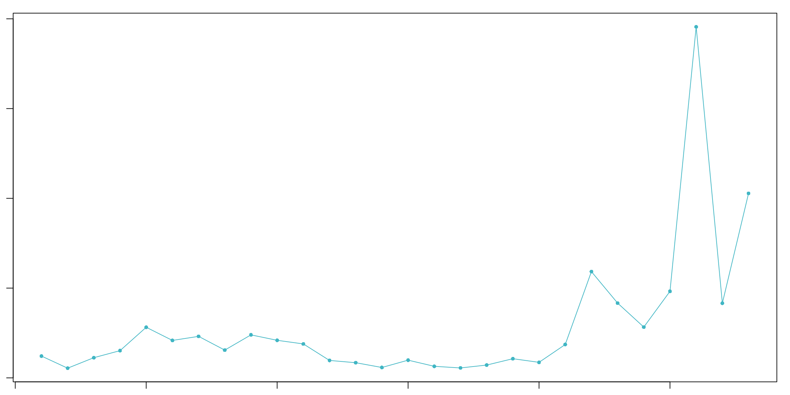
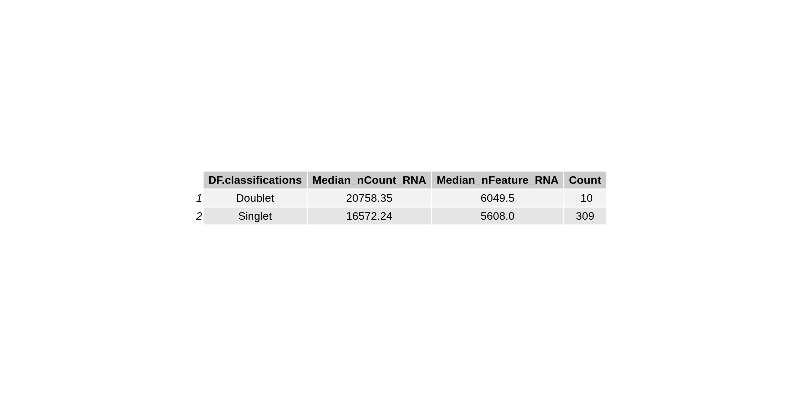

Chapter 3 Removing sources of unwanted noise from the single cell dataset
Now we will do some initial preprocessing of single cell data to ensure we have some high quality data. This will involve 3 main steps
Removing empty droplets - droplets that do not contain true cells.
Removing ambient RNA contamination - optional
Removing low quality cells
3.1 Empty droplets
This function removes empty droplets, a critical step to ensure that only true cells are retained for analysis. In short-read analysis using CellRanger, this process is automated, and empty droplets are removed by the software. However, FLAMES does not perform this step automatically, so it must be done manually. The function provided here not only removes empty droplets but also generates general QC metrics, enabling users to assess the reasonableness of the number of cells removed.
Code
### notes: This function should be refactored and cleaned up. It's very long and complex.
perform_empty_drops_analysis <- function(output_path, gene_count_file, empty_drops_file, output_seurat_file, fdr_threshold = 0.001, lower = 100) {
# Load required libraries
# Read in data
df <- read.csv(gene_count_file, row.names = 1)
df_emptydrops <- read.csv(empty_drops_file, row.names = 1)
# Combine the dataframes by row names
combined_df <- merge(df, df_emptydrops, by = "row.names", all = TRUE)
rownames(combined_df) <- combined_df[, 1]
combined_df[, 1] <- NULL
combined_df[is.na(combined_df)] <- 0
# Perform standard pre-processing before empty drops analysis
seurat_obj <- CreateSeuratObject(counts = df, project = "Day_55", min.features = 20)
seurat_obj[["percent.mt"]] <- PercentageFeatureSet(seurat_obj, pattern = "^MT-")
VlnPlot(seurat_obj, features = c("nFeature_RNA", "nCount_RNA", "percent.mt"), ncol = 3)
#seurat_obj <- subset(seurat_obj, subset = nFeature_RNA > 10 & nFeature_RNA < 100000 & percent.mt < 100)
seurat_obj <- NormalizeData(seurat_obj, normalization.method = "LogNormalize", scale.factor = 10000)
seurat_obj <- FindVariableFeatures(seurat_obj, selection.method = "vst", nfeatures = 2000)
all.genes <- rownames(seurat_obj)
seurat_obj <- ScaleData(seurat_obj, features = all.genes)
seurat_obj <- RunPCA(seurat_obj, features = VariableFeatures(object = seurat_obj))
ElbowPlot(seurat_obj)
seurat_obj <- FindNeighbors(seurat_obj, dims = 1:10)
seurat_obj <- FindClusters(seurat_obj, resolution = 0.5)
seurat_obj <- RunUMAP(seurat_obj, dims = 1:10)
DimPlot(seurat_obj, reduction = "umap")
# Define function to make dgCMatrix from combined counts
makedgcmatrix <- function(count.matrix) {
seurat_object <- CreateSeuratObject(counts = count.matrix, project = "singlecell")
list(seurat_object[["RNA"]]$counts)
}
# Empty Drops Analysis
combined_df[] <- lapply(combined_df, function(x) as.numeric(as.character(x)))
outs.ddcmatrix <- makedgcmatrix(combined_df)[[1]]
br.out <- DropletUtils::barcodeRanks(outs.ddcmatrix)
e.out <- emptyDrops(outs.ddcmatrix, lower = lower, niters = 10000, test.ambient = TRUE, BPPARAM = SerialParam())
is.cell <- e.out$FDR < fdr_threshold
# Create a dataframe with FDR of TRUE cells
is.true.cell_CR <- as.data.frame(e.out@listData[["FDR"]], e.out@rownames)
is.true.cell_CR <- is.true.cell_CR %>% filter(is.true.cell_CR$`e.out@listData[["FDR"]]` <= fdr_threshold)
is.true.cell_CR <- tibble::rownames_to_column(is.true.cell_CR, "cell_id")
# Function for retrieving the Seurat cells and cluster in dataframe
overlap_true_cell <- function(seurat_object) {
seurat_cluster.df <- as.data.frame(seurat_object$seurat_clusters)
seurat_cluster.df <- tibble::rownames_to_column(seurat_cluster.df, "cell_id")
seurat_cluster.df
}
# Obtain cluster dataframe from Seurat object
overlap_CR <- overlap_true_cell(seurat_obj)
# Check overlaps between Seurat object and true cells
summary(overlap_CR$cell_id %in% is.true.cell_CR$cell_id)
# Function to add metadata to Seurat object
True.cells <- function(e.out) {
cells <- as.data.frame(e.out@rownames)
fdr <- as.data.frame(e.out$FDR)
T.F.cells <- cbind(cells, fdr)
T.F.cells <- data.frame(T.F.cells[,-1], row.names = T.F.cells[,1])
setnames(T.F.cells, c('FDR'))
T.F.cells %>%
mutate(FDR = case_when(FDR < fdr_threshold ~ "Cells", FDR > fdr_threshold ~ "Empty_drops"))
}
cells_CR <- True.cells(e.out)
seurat_obj <- AddMetaData(seurat_obj, metadata = cells_CR, col.name = 'is.cell')
# Plot Empty drops on Gene UMAP
# Create a ggplot object
rankplot <- ggplot(br.out, aes(x = rank, y = total)) +
geom_point() +
scale_x_log10() +
scale_y_log10() +
labs(x = "Rank", y = "Total") +
geom_line(aes(y = fitted), color = "red", linetype = "solid") +
geom_hline(yintercept = metadata(br.out)$knee, color = "dodgerblue", linetype = "dashed") +
geom_hline(yintercept = metadata(br.out)$inflection, color = "forestgreen", linetype = "dashed") +
theme(
legend.position = "bottomleft"
) +
guides(colour = guide_legend(override.aes = list(linetype = c("dashed", "dashed")))) +
annotate("text", x = Inf, y = metadata(br.out)$knee, label = "knee", color = "dodgerblue", vjust = -1, hjust = 1) +
annotate("text", x = Inf, y = metadata(br.out)$inflection, label = "inflection", color = "forestgreen", vjust = -1, hjust = 1)
# Summary table -> may want to add a bunch of other summary metrics
# Extract counts with checks for NULL
cell_counts <- as.data.frame(table(seurat_obj@meta.data$is.cell))
count_true_cells <- ifelse(length(cell_counts$Freq[cell_counts$Var1 == "Cells"]) > 0,
cell_counts$Freq[cell_counts$Var1 == "Cells"], 0)
count_empty_drops <- ifelse(length(cell_counts$Freq[cell_counts$Var1 == "Empty_drops"]) > 0,
cell_counts$Freq[cell_counts$Var1 == "Empty_drops"], 0)
# Create the summary table
summary_table <- data.frame(
Description = c('fdr', 'lower Counts', 'number of true cells', 'number of empty drops'),
Value = c(fdr_threshold, lower, count_true_cells, count_empty_drops)
)
summary_grob <- tableGrob(summary_table, rows = NULL, cols = NULL)
# Create the combined plot
plot1 <- grid.arrange(
rankplot,
DimPlot(seurat_obj, reduction = "umap", group.by = 'is.cell') +
labs(color = "is.cell", title = 'Seurat Object') +
theme(text = element_text(size = 10), plot.background = element_rect(fill = "white")),
FeaturePlot(seurat_obj, features = "nCount_RNA") +
theme(plot.background = element_rect(fill = "white")),
FeaturePlot(seurat_obj, features = "nFeature_RNA") +
theme(plot.background = element_rect(fill = "white")),
summary_grob,
ncol = 2,
top = textGrob('Empty drops vs real cells')
)
#output the plot and summary stats
pdf(file = file.path(output_path, paste0(output_seurat_file, "_plots.pdf")), width = 6, height = 6, bg = "white")
plot(plot1)
dev.off()
# Subset the Seurat object to remove cells marked as empty drops
seurat_obj_rm_empty <- subset(seurat_obj, subset = is.cell == 'Cells')
#save the seurat objects
saveRDS(seurat_obj, file = file.path(output_path, paste0("with_empty_", output_seurat_file, ".rds")))
saveRDS(seurat_obj_rm_empty, file = file.path(output_path, paste0("removed_empty_", output_seurat_file, ".rds")))
}
#####################
# usage
perform_empty_drops_analysis(
gene_count_file = "./output_files/counts/geneSymbol_gene_count.csv",
empty_drops_file = "./output_files/counts/background_geneSymbol_gene_count.csv",
output_path = "./output_files/empty_drops/",
output_seurat_file = "Day55",
fdr_threshold = 0.001, # see droplet utils if you want to adjust these params
lower = 500 # see droplet utils if you want to adjust these params
)## Modularity Optimizer version 1.3.0 by Ludo Waltman and Nees Jan van Eck
##
## Number of nodes: 344
## Number of edges: 7209
##
## Running Louvain algorithm...
## Maximum modularity in 10 random starts: 0.8510
## Number of communities: 7
## Elapsed time: 0 seconds
3.2 Removing ambient RNA contamination
Now we will remove ambient RNA contamination using decontX (or SoupX). This step is optional, and its up to the user to decide whether its necessary. In this case, the barcode rank plot (Figure 3.1) shows a clear distinction between true barcodes and background barcodes, suggesting that ambient RNA contamination may not significantly contribute to noise in this dataset. However, well demonstrate how to run this step in case your barcode rank plot is noisier and contamination is a concern. if users wish to skip this step take the seurat_obj_rm_empty object and proceed to standard gene QC step.
Code
knitr::include_graphics("images/knee_plot.png")
Figure 3.1: Barcode rank plot produced by FLAMES.
Code
# Function to run decontX on a single Seurat object
run_decontX <- function(seurat_obj_path, background_counts_path, sample_id) {
# Load the Seurat object
seurat_obj <- readRDS(seurat_obj_path)
filtered_counts <- as.matrix(GetAssayData(seurat_obj, layer = "counts"))
# Read background counts
raw_counts <- as.matrix(read.csv(background_counts_path, row.names = 1))
# Get cluster info from Seurat object
cluster_info <- setNames(seurat_obj$seurat_clusters, colnames(seurat_obj))
# Find common genes
common_genes <- intersect(rownames(filtered_counts), rownames(raw_counts))
raw_counts <- raw_counts[common_genes, ]
filtered_counts <- filtered_counts[common_genes, ]
# Create SingleCellExperiment objects
sce_raw <- SingleCellExperiment(list(counts = raw_counts))
sce_object <- SingleCellExperiment(list(counts = filtered_counts))
# Run decontX with background
sce <- decontX(sce_object, z = cluster_info, background = sce_raw)
# Summarize contamination levels
contamination_summary <- as.array(summary(sce$decontX_contamination))
print(contamination_summary)
# Add contamination levels to Seurat object metadata
contamination <- colData(sce)$decontX_contamination
seurat_obj <- AddMetaData(seurat_obj, metadata = contamination, col.name = "decontX_contamination")
# Extract decontaminated counts from SCE object
decontaminated_counts <- assay(sce, "decontXcounts")
decontaminated_counts <- as.matrix(decontaminated_counts)
# Create a new assay with decontaminated counts and add it to Seurat object
new_assay <- CreateAssayObject(counts = decontaminated_counts)
seurat_obj[["decontaminated"]] <- new_assay
clusters_umap_orig <- DimPlot(
object = seurat_obj,
group.by = "seurat_clusters",
reduction = "umap",
label = TRUE,
pt.size = 0.5
) + labs(title = "UMAP with Clusters")
# Plot UMAP with contamination levels
contamination_umap <- FeaturePlot(
object = seurat_obj,
features = "decontX_contamination",
reduction = "umap"
) + labs(title = "decontX contamination value")
DefaultAssay(seurat_obj) <- "decontaminated"
# Normalization, variable feature selection, and scaling
seurat_obj <- NormalizeData(seurat_obj)
seurat_obj <- FindVariableFeatures(seurat_obj)
seurat_obj <- ScaleData(seurat_obj)
# PCA and clustering
seurat_obj <- RunPCA(seurat_obj)
seurat_obj <- FindNeighbors(seurat_obj, dims = 1:20)
seurat_obj <- FindClusters(seurat_obj, resolution = 0.7)
# UMAP
seurat_obj <- RunUMAP(seurat_obj, dims = 1:20)
# Plot UMAP with updated clusters
clusters_umap <- DimPlot(
object = seurat_obj,
group.by = "seurat_clusters",
reduction = "umap",
label = TRUE,
pt.size = 0.5
) + labs(title = "UMAP with Corrected Clusters")
# Combine plots
combined_umap <- cowplot::plot_grid(clusters_umap_orig, contamination_umap, clusters_umap, ncol = 2)
cat("Making plots\n")
# Save the combined plot as a PDF
#pdf(file = paste0(sample_id, "_decontx_plots.pdf"), width = 18, height = 6)
print(combined_umap)
#dev.off()
cat("Saving seurat obj\n")
# Save the Seurat object
saveRDS(seurat_obj, file = paste0(sample_id, "_decontx_seurat_obj.rds"))
# Save decontaminated counts and contamination summary
cat("Saving decontx counts\n")
write.csv(decontaminated_counts, paste0(sample_id, "_decontx_counts.csv"))
# Print a message indicating that the contamination summary is being saved
cat("Saving contamination summary\n")
# Ensure contamination_summary is a data frame
contamination_summary_df <- as.data.frame(contamination_summary)
write.table(contamination_summary_df, file = paste0(sample_id, "_contamination_summary.txt"))
# Optionally return the results
return(list(seurat_obj = seurat_obj, decontaminated_counts = decontaminated_counts, contamination_summary = contamination_summary))
}
# Run decontX on the input Seurat object and background counts file
deconx_results <- run_decontX("./output_files/empty_drops/removed_empty_Day55.rds", "./output_files/counts/background_geneSymbol_gene_count.csv", "./output_files/decontx//Day55")## Min. 1st Qu. Median Mean 3rd Qu. Max.
## 0.001336 0.040294 0.065590 0.095857 0.113042 0.810218## Modularity Optimizer version 1.3.0 by Ludo Waltman and Nees Jan van Eck
##
## Number of nodes: 339
## Number of edges: 7342
##
## Running Louvain algorithm...
## Maximum modularity in 10 random starts: 0.8177
## Number of communities: 8
## Elapsed time: 0 seconds## Warning: The default method for RunUMAP has changed from calling Python UMAP via reticulate to the R-native UWOT using the cosine metric
## To use Python UMAP via reticulate, set umap.method to 'umap-learn' and metric to 'correlation'
## This message will be shown once per session## Making plots
## Saving seurat obj
## Saving decontx counts
## Saving contamination summary3.3 Standard gene QC to remove low quality cells
Now that we have removed empty drops and ambient RNA we will perform standard QC as described in the Seurat tutorial (found here). First we will determine what our filtering criteria should be using some basic QC plots.
Code
# standard QC filtering and also remove doublets
#define sample name
sample_id = 'Day55_tutorial'
# Create Seurat object
seurat_object <- CreateSeuratObject(counts = deconx_results$decontaminated_counts, project = sample_id)
# Plot relationship between reads and unique genes per cell
plot_scatter1 <- FeatureScatter(seurat_object, feature1 = "nCount_RNA", feature2 = "nFeature_RNA") +
geom_smooth(method = "lm") + NoLegend() +
labs(title = "Reads vs Unique Genes per Cell BEFORE Filtering")
plot(plot_scatter1)
Code
# Add mitochondrial percentage
seurat_object[["joined"]] <- JoinLayers(seurat_object[["RNA"]])
seurat_object[["percent.mt"]] <- PercentageFeatureSet(seurat_object, pattern = "^MT-")
p1 <- VlnPlot(seurat_object, features = c("nFeature_RNA", "nCount_RNA", "percent.mt"))
p1 + plot_annotation(title = "QC plots (gene level) BEFORE Filtering")
Based on these QC plots we will filter the data with the following values listed in the bellow code chunk. QC paramaters might vary based on your own data so please make sure you filter your data accordingly. Here we will also remove doublets - droplets that contain two or more cells - using the package doubletfinder.
Code
# Filter cells based on feature and count thresholds
## define the filtering params - (change these based on your data)
max.features = 10000
min.features = 1000
min.counts = 800
max.counts = 100000
MT = 10
npc = 15
doublet_rate = 0.039
cluster_res = 0.9
#now we filter the seurat object based on the QC params listed above
filt_seurat_object <- subset(seurat_object, subset = nFeature_RNA > min.features & nFeature_RNA < max.features & percent.mt < MT & nCount_RNA < max.counts & nCount_RNA > min.counts)
# Plot quality metrics after filtering
p2 <- VlnPlot(filt_seurat_object, features = c("nFeature_RNA", "nCount_RNA", "percent.mt"))
p2 + plot_annotation(title = "QC metrics gene level AFTER Filtering")
Code
# Normalize data
filt_seurat_object <- NormalizeData(filt_seurat_object, normalization.method = "LogNormalize", scale.factor = 10000)
# Identify highly variable features
filt_seurat_object <- FindVariableFeatures(filt_seurat_object, selection.method = "vst", nfeatures = 2000)
# Apply linear transformation
all_genes <- rownames(filt_seurat_object)
filt_seurat_object <- ScaleData(filt_seurat_object, features = all_genes)
# Perform PCA
filt_seurat_object <- RunPCA(filt_seurat_object, features = VariableFeatures(object = filt_seurat_object))
# Cluster cells
filt_seurat_object <- FindNeighbors(filt_seurat_object, dims = 1:npc)
filt_seurat_object <- FindClusters(filt_seurat_object, resolution = cluster_res)## Modularity Optimizer version 1.3.0 by Ludo Waltman and Nees Jan van Eck
##
## Number of nodes: 319
## Number of edges: 6816
##
## Running Louvain algorithm...
## Maximum modularity in 10 random starts: 0.7804
## Number of communities: 8
## Elapsed time: 0 secondsCode
# Perform UMAP
filt_seurat_object <- RunUMAP(filt_seurat_object, dims = 1:npc)
### Filter out doublets (remember to modify doublet rate if samples have variable target cells)
## pK Identification (no ground-truth)
sweep.res.list_pbmc <- paramSweep(filt_seurat_object, PCs = 1:npc, sct = FALSE)## [1] "Creating artificial doublets for pN = 5%"
## [1] "Creating Seurat object..."
## [1] "Normalizing Seurat object..."## [1] "Finding variable genes..."## [1] "Scaling data..."## [1] "Running PCA..."
## [1] "Calculating PC distance matrix..."
## [1] "Defining neighborhoods..."
## [1] "Computing pANN across all pK..."
## [1] "pK = 0.03..."
## [1] "pK = 0.04..."
## [1] "pK = 0.05..."
## [1] "pK = 0.06..."
## [1] "pK = 0.07..."
## [1] "pK = 0.08..."
## [1] "pK = 0.09..."
## [1] "pK = 0.1..."
## [1] "pK = 0.11..."
## [1] "pK = 0.12..."
## [1] "pK = 0.13..."
## [1] "pK = 0.14..."
## [1] "pK = 0.15..."
## [1] "pK = 0.16..."
## [1] "pK = 0.17..."
## [1] "pK = 0.18..."
## [1] "pK = 0.19..."
## [1] "pK = 0.2..."
## [1] "pK = 0.21..."
## [1] "pK = 0.22..."
## [1] "pK = 0.23..."
## [1] "pK = 0.24..."
## [1] "pK = 0.25..."
## [1] "pK = 0.26..."
## [1] "pK = 0.27..."
## [1] "pK = 0.28..."
## [1] "pK = 0.29..."
## [1] "pK = 0.3..."
## [1] "Creating artificial doublets for pN = 10%"
## [1] "Creating Seurat object..."
## [1] "Normalizing Seurat object..."## [1] "Finding variable genes..."## [1] "Scaling data..."## [1] "Running PCA..."
## [1] "Calculating PC distance matrix..."
## [1] "Defining neighborhoods..."
## [1] "Computing pANN across all pK..."
## [1] "pK = 0.03..."
## [1] "pK = 0.04..."
## [1] "pK = 0.05..."
## [1] "pK = 0.06..."
## [1] "pK = 0.07..."
## [1] "pK = 0.08..."
## [1] "pK = 0.09..."
## [1] "pK = 0.1..."
## [1] "pK = 0.11..."
## [1] "pK = 0.12..."
## [1] "pK = 0.13..."
## [1] "pK = 0.14..."
## [1] "pK = 0.15..."
## [1] "pK = 0.16..."
## [1] "pK = 0.17..."
## [1] "pK = 0.18..."
## [1] "pK = 0.19..."
## [1] "pK = 0.2..."
## [1] "pK = 0.21..."
## [1] "pK = 0.22..."
## [1] "pK = 0.23..."
## [1] "pK = 0.24..."
## [1] "pK = 0.25..."
## [1] "pK = 0.26..."
## [1] "pK = 0.27..."
## [1] "pK = 0.28..."
## [1] "pK = 0.29..."
## [1] "pK = 0.3..."
## [1] "Creating artificial doublets for pN = 15%"
## [1] "Creating Seurat object..."
## [1] "Normalizing Seurat object..."## [1] "Finding variable genes..."## [1] "Scaling data..."## [1] "Running PCA..."
## [1] "Calculating PC distance matrix..."
## [1] "Defining neighborhoods..."
## [1] "Computing pANN across all pK..."
## [1] "pK = 0.03..."
## [1] "pK = 0.04..."
## [1] "pK = 0.05..."
## [1] "pK = 0.06..."
## [1] "pK = 0.07..."
## [1] "pK = 0.08..."
## [1] "pK = 0.09..."
## [1] "pK = 0.1..."
## [1] "pK = 0.11..."
## [1] "pK = 0.12..."
## [1] "pK = 0.13..."
## [1] "pK = 0.14..."
## [1] "pK = 0.15..."
## [1] "pK = 0.16..."
## [1] "pK = 0.17..."
## [1] "pK = 0.18..."
## [1] "pK = 0.19..."
## [1] "pK = 0.2..."
## [1] "pK = 0.21..."
## [1] "pK = 0.22..."
## [1] "pK = 0.23..."
## [1] "pK = 0.24..."
## [1] "pK = 0.25..."
## [1] "pK = 0.26..."
## [1] "pK = 0.27..."
## [1] "pK = 0.28..."
## [1] "pK = 0.29..."
## [1] "pK = 0.3..."
## [1] "Creating artificial doublets for pN = 20%"
## [1] "Creating Seurat object..."
## [1] "Normalizing Seurat object..."## [1] "Finding variable genes..."## [1] "Scaling data..."## [1] "Running PCA..."
## [1] "Calculating PC distance matrix..."
## [1] "Defining neighborhoods..."
## [1] "Computing pANN across all pK..."
## [1] "pK = 0.03..."
## [1] "pK = 0.04..."
## [1] "pK = 0.05..."
## [1] "pK = 0.06..."
## [1] "pK = 0.07..."
## [1] "pK = 0.08..."
## [1] "pK = 0.09..."
## [1] "pK = 0.1..."
## [1] "pK = 0.11..."
## [1] "pK = 0.12..."
## [1] "pK = 0.13..."
## [1] "pK = 0.14..."
## [1] "pK = 0.15..."
## [1] "pK = 0.16..."
## [1] "pK = 0.17..."
## [1] "pK = 0.18..."
## [1] "pK = 0.19..."
## [1] "pK = 0.2..."
## [1] "pK = 0.21..."
## [1] "pK = 0.22..."
## [1] "pK = 0.23..."
## [1] "pK = 0.24..."
## [1] "pK = 0.25..."
## [1] "pK = 0.26..."
## [1] "pK = 0.27..."
## [1] "pK = 0.28..."
## [1] "pK = 0.29..."
## [1] "pK = 0.3..."
## [1] "Creating artificial doublets for pN = 25%"
## [1] "Creating Seurat object..."
## [1] "Normalizing Seurat object..."## [1] "Finding variable genes..."## [1] "Scaling data..."## [1] "Running PCA..."
## [1] "Calculating PC distance matrix..."
## [1] "Defining neighborhoods..."
## [1] "Computing pANN across all pK..."
## [1] "pK = 0.03..."
## [1] "pK = 0.04..."
## [1] "pK = 0.05..."
## [1] "pK = 0.06..."
## [1] "pK = 0.07..."
## [1] "pK = 0.08..."
## [1] "pK = 0.09..."
## [1] "pK = 0.1..."
## [1] "pK = 0.11..."
## [1] "pK = 0.12..."
## [1] "pK = 0.13..."
## [1] "pK = 0.14..."
## [1] "pK = 0.15..."
## [1] "pK = 0.16..."
## [1] "pK = 0.17..."
## [1] "pK = 0.18..."
## [1] "pK = 0.19..."
## [1] "pK = 0.2..."
## [1] "pK = 0.21..."
## [1] "pK = 0.22..."
## [1] "pK = 0.23..."
## [1] "pK = 0.24..."
## [1] "pK = 0.25..."
## [1] "pK = 0.26..."
## [1] "pK = 0.27..."
## [1] "pK = 0.28..."
## [1] "pK = 0.29..."
## [1] "pK = 0.3..."
## [1] "Creating artificial doublets for pN = 30%"
## [1] "Creating Seurat object..."
## [1] "Normalizing Seurat object..."## [1] "Finding variable genes..."## [1] "Scaling data..."## [1] "Running PCA..."
## [1] "Calculating PC distance matrix..."
## [1] "Defining neighborhoods..."
## [1] "Computing pANN across all pK..."
## [1] "pK = 0.03..."
## [1] "pK = 0.04..."
## [1] "pK = 0.05..."
## [1] "pK = 0.06..."
## [1] "pK = 0.07..."
## [1] "pK = 0.08..."
## [1] "pK = 0.09..."
## [1] "pK = 0.1..."
## [1] "pK = 0.11..."
## [1] "pK = 0.12..."
## [1] "pK = 0.13..."
## [1] "pK = 0.14..."
## [1] "pK = 0.15..."
## [1] "pK = 0.16..."
## [1] "pK = 0.17..."
## [1] "pK = 0.18..."
## [1] "pK = 0.19..."
## [1] "pK = 0.2..."
## [1] "pK = 0.21..."
## [1] "pK = 0.22..."
## [1] "pK = 0.23..."
## [1] "pK = 0.24..."
## [1] "pK = 0.25..."
## [1] "pK = 0.26..."
## [1] "pK = 0.27..."
## [1] "pK = 0.28..."
## [1] "pK = 0.29..."
## [1] "pK = 0.3..."Code
sweep.stats_pbmc <- summarizeSweep(sweep.res.list_pbmc, GT = FALSE)
bcmvn_pbmc <- find.pK(sweep.stats_pbmc)
## NULLCode
#####
pK <- bcmvn_pbmc %>% filter(BCmetric == max(BCmetric)) %>% dplyr::select(pK)
pK <- as.numeric(as.character(pK[[1]]))
## Homotypic Doublet Proportion Estimate
annotations <- filt_seurat_object@meta.data$seurat_clusters
homotypic.prop <- modelHomotypic(annotations)
nExp_poi <- round(doublet_rate * nrow(filt_seurat_object@meta.data))
nExp_poi.adj <- round(nExp_poi * (1 - homotypic.prop))
# Run doubletFinder
filt_seurat_object <- doubletFinder(filt_seurat_object, PCs = 1:npc, pN = 0.25, pK = pK, nExp = nExp_poi.adj, reuse.pANN = FALSE, sct = FALSE)## [1] "Creating 106 artificial doublets..."
## [1] "Creating Seurat object..."
## [1] "Normalizing Seurat object..."## [1] "Finding variable genes..."## [1] "Scaling data..."## [1] "Running PCA..."
## [1] "Calculating PC distance matrix..."
## [1] "Computing pANN..."
## [1] "Classifying doublets.."Code
colnames(filt_seurat_object@meta.data) <- sub("DF.classifications_.*$", "DF.classifications", colnames(filt_seurat_object@meta.data))
# Summary doublets
statsDoublets <- filt_seurat_object@meta.data %>%
group_by(DF.classifications) %>%
summarize(Median_nCount_RNA = median(nCount_RNA), Median_nFeature_RNA = median(nFeature_RNA), Count = n())
###Save the seurat object with doublets listed
filt_seurat_object_doublets <- filt_seurat_object
filt_seurat_object <- subset(filt_seurat_object, subset = DF.classifications == 'Singlet')
# figures
ggplot_list <- list(
ElbowPlot(filt_seurat_object) + labs(title = 'SD explained by each PC') + theme(text = element_text(size = 10)),
FeatureScatter(filt_seurat_object, feature1 = "nCount_RNA", feature2 = "nFeature_RNA") +
geom_smooth(method = "lm") + NoLegend() + labs(title = "Association between reads and \nunique genes per cell AFTER filtering"),
DimPlot(filt_seurat_object, reduction = "umap") +
labs(color = "Cluster \n(from PCA)", title = '') +
theme(text = element_text(size = 10)),
FeaturePlot(filt_seurat_object, reduction = "umap", features = 'nCount_RNA') +
labs(color = "UMI count", title = '') +
theme(text = element_text(size = 10)),
FeaturePlot(filt_seurat_object, reduction = "umap", features = 'nFeature_RNA') +
labs(color = str_wrap("Feature count (gene)", 15), title = '') +
theme(text = element_text(size = 10)),
p2
)
combined_plots <- plot_grid(plotlist = ggplot_list, ncol = 3)
plot(combined_plots)
Code
plot(DimPlot(filt_seurat_object_doublets, reduction = 'umap', group.by = "DF.classifications"))
Code
tbl_sts1 <- tableGrob(statsDoublets)
grid.newpage()
grid.draw(tbl_sts1)
Code
stats_sumary <- rbind("Sample ID" = sample_id,
"Cells_before_filter" = dim(seurat_object)[2],
"Cells_after_filter" = dim(filt_seurat_object)[2],
"Median Feature per Cell before filter" = median(seurat_object$nFeature_RNA),
"Median Reads per Gene before filter" = median(seurat_object$nCount_RNA),
"Median Feature per Cell" = median(filt_seurat_object$nFeature_RNA),
"Median Reads per Gene" = median(filt_seurat_object$nCount_RNA),
"Max Features" = max.features,
"Min Features" = min.features,
"Min Counts" = min.counts,
"Max Counts" = max.counts,
"MT Percentage" = MT,
"NPCs" = npc,
"Median Percent MT before Filter" = median(seurat_object@meta.data[["percent.mt"]]),
"Median Percent MT after Filter" = median(filt_seurat_object@meta.data[["percent.mt"]])
)
tbl_sts2 <- tableGrob(stats_sumary)
grid.newpage()
grid.draw(tbl_sts2)
Code
#save files
saveRDS(filt_seurat_object, file = paste0("./output_files/QC/", sample_id, "_umap_object.rds"))
saveRDS(filt_seurat_object_doublets, file = paste0("./output_files/QC/",sample_id, "_with_doublets_umap_object.rds"))
write.table(stats_sumary, file = paste0("./output_files/QC/", sample_id, "_stats.csv")) Now that we have filtered the object to ensure we retain high quality data we are going to add in the isoform level information.